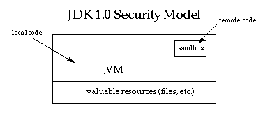
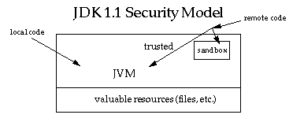

| 목차 | 전의 항목 | 다음의 항목 | Java 시큐리티 아키텍쳐(architecture) |
Java 테크놀러지의 탄생 당초부터, Java 플랫폼의 시큐리티에는 강한 관심이 전해져 Java 테크놀러지의 전개에 의해 발생하는 시큐리티 문제와 함께, 더욱 더 관심이 높아지고 있습니다.테크놀러지의 제공자측의 시점으로부터 보면(자), Java 의 시큐리티에는 다음의 2 개의 측면이 있습니다.
이 문서에서는, 최초의 측면에 관한 문제를 취급합니다. 이 측면에서 대상이 되는 고객은, 브라우저나 operating system등의 벤더입니다. 벤더는, 제품에 Java 테크놀러지의 번들이나 매입을 실시합니다.
Java 플랫폼의 제공하는 오리지날의 시큐리티 모델은, sandbox 모델로서 알려져 있습니다. 이것은, 오픈 네트워크로부터 취득한 신뢰할 수 없는 코드를 실행하기 위한 , 매우 제한된 환경을 제공하기 위한의 것입니다. sandbox 모델의 본질은, 「로컬 코드는 신뢰할 수 있으므로, 매우 중요한 시스템 자원 (파일 시스템등)에의 완전한 액세스권을 가진다. 한편, 다운로드된 원격 코드 (애플릿)는 신뢰할 수 없기 때문에, sandbox 안의 한정된 자원인 만큼 액세스 할 수 있다」라고 하는 것입니다. 이 sandbox 모델을 다음의 그림에 나타냅니다. sandbox 모델은, JDK (Java Development Kit)를 통해서 퍼져, JDK 1.0 을 사용해 작성된 어플리케이션에 일반적으로 채용되었습니다. 이러한 어플리케이션에는, Java 대응의 Web 브라우저도 포함됩니다.
많은 기구에 의해 시큐리티 전체가 강화됩니다. 우선, 이 언어는, 형태 보증되도록(듯이) 설계되고 있어 간단하게 사용할 수 있습니다. C 나 C++ 등의 다른 프로그램 언어를 사용하는 경우에 비해, 무의식적인 미스를 줄여, 프로그래머의 부담을 가볍게 하는 것이 기대됩니다. 이 언어에는, 자동 메모리 메니지먼트, 가베지 컬렉션, 캐릭터 라인이나 배열의 범위 체크등의 특징이 있습니다. 이러한 특징은, 프로그래머가 안전한 코드를 쓰기 위해서(때문에) 매우 도움이 됩니다.
다음에, 컴파일러와 바이트코드검증자에 의해, 정당한 Java 바이트 코드만이 실행됩니다. 바이트코드검증자와 Java Virtual Machine 에 의해, 실행시의 언어의 안전성이 보증됩니다.
게다가 클래스 로더는 로컬인 이름 공간을 정의합니다. 이것에 의해, 신뢰할 수 없는 애플릿이 다른 프로그램의 실행을 방해하지 않게 할 수가 있습니다.
마지막으로, 매우 중요한 시스템 자원에의 액세스에는 Java Virtual Machine 가 개재해, 미리 SecurityManager 클래스에 의해 체크됩니다. 이 클래스는, 신뢰할 수 없는 코드의 동작을 최소한으로 제한합니다.
JDK 1.1 에는, 아래의 그림에 나타내는 것 같은 「서명 첨부 애플릿」의 개념이 도입되었습니다. JDK 1.1 에서는, 올바르고 디지털 서명 된 애플릿은, 그 애플릿을 받은 엔드 시스템이 그 서명 키를 신뢰할 수 있으면(자) 인정했을 경우에는, 로컬 코드와 같게 다루어집니다. 서명 첨부 애플릿은, 서명 키와 함께 JAR (Java Archive) 형식에서 도착됩니다. JDK 1.1 에서는, 서명 첨부 애플릿도 sandbox 내에서 실행합니다.

새로운 Java 2 플랫폼의 시큐리티 아키텍쳐(architecture)를 다음의 그림에 나타냅니다. 새로운 아키텍쳐(architecture) 도입의 주된 목적은, 다음과 같습니다.[D]
이 기능은 당초부터 JDK 에 있었습니다만, 어플리케이션으로 이것을 사용하려면 , 부담의 큰 프로그래밍이 필요했습니다 (SecurityManager 클래스와 ClassLoader 클래스의 서브 클래스화 및 그 커스터마이즈 등). HotJava Broswer 1.0 은, 이러한 어플리케이션의 하나로, 브라우저의 사용자에게는 소수의 시큐리티 레벨로부터의 선택만이 용서됩니다.그러나, 이러한 프로그래밍에서는, 시큐리티에 대해 세세하게 고려할 필요가 있기 (위해)때문에, 고도의 기능과 컴퓨터 세큐리티에 관한 깊은 지식이 요구됩니다. 새로운 아키텍쳐(architecture)에 의해, 이 과제가 보다 간단하고 안전하게 됩니다.
이 기능도 이전부터 JDK 에 있었습니다만, 사용법은 쉽지 않았습니다. 또, 시큐리티 코드를 기술하는 것도 간단한 작업은 아니기 때문에, 어플리케이션의 개발자와 사용자가 프로그램을 기술하는 일 없이 시큐리티 정책를 설정할 수 있는 것이 바람직합니다.
JDK 1.1 까지는, 새로운 액세스권을 작성하려면 SecurityManager 클래스에 새로운check메소드를 추가할 필요가 있었습니다. 새로운 아키텍쳐(architecture)에서는, 타입 지정된 액세스권 (각각이 1 개의 시스템 자원에의 액세스를 나타낸다)이 용서되어 올바른 타입의 (현단계에서 미정도리의 액세스권도 포함해) 모든 액세스권의 자동 처리가 용서됩니다. 대부분의 경우, SecurityManager 클래스에 새로운 메소드를 작성할 필요는 없습니다. 사실, 지금까지 , 새로운 메소드의 작성은 필요하게 되어 있지 않습니다.
모든 로컬 코드를 신뢰할 수 있다고 하는 편입의 개념은, 없어졌습니다. 로컬 코드 (시스템 코드 이외의 코드, 로컬 파일 시스템에 인스톨 된 어플리케이션 패키지등)는, 애플릿과 같은 시큐리티 관리를 받습니다. 다만, 로컬 코드 (또는 원격 코드)의 정책를 자유도가 최고이다고 선언하면, 사실상 그 코드는 완전하게 신뢰할 수 있는 것으로서 실행됩니다. 같은 원칙이 서명 첨부 애플릿 및 모든 Java 어플리케이션에 들어맞읍니다.마지막으로, 향후의 프로그래밍으로 숨은 시큐리티 홀을 만들어 내는 위험을 줄이기 위해서(때문에), 시큐리티 클래스 (SecurityManager 클래스와 ClassLoader 클래스를 포함한다)의 설계를 내부적으로 조정한다고 하는 암묵의 목표가 있습니다.